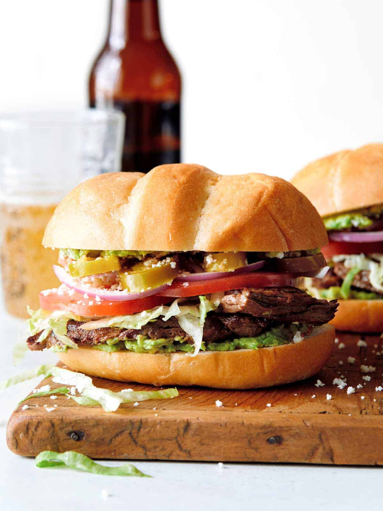

<link rel="stylesheet" type="text/css" href="recipe-homepage.css" />
<header>
    <h1>Odin Recipes</h1>
</header>

<main class="recipe-container">
    <h2 class="featured-title">Featured Recipes</h2>
    <section class="recipe-grid">

        <div class="recipe-card">
            
            <h3>Tacos</h3>
            <small><em>A Mexican taco is a folded tortilla filled with flavorful ingredients like seasoned meats, fresh
                    toppings, and sauces. It's a versatile and beloved street food known for its delicious flavors and
                    vibrant combinations.</em></small>
            <a href="#">View Recipe</a>
        </div>

        <div class="recipe-card">
            
            <h3>Tamales</h3>
            <small><em>Mexican tamales are savory masa-filled treats wrapped in corn husks and steamed to perfection.
                    They
                    offer a delightful blend of flavors and are a beloved staple in Mexican cuisine.</em></small>
            <a href="#">View Recipe</a>
        </div>

        <div class="recipe-card">
            
            <h3>Elote</h3>
            <small><em>Mexican elote is a grilled or boiled corn on the cob, coated with a savory blend of mayo, cheese,
                    lime juice, and chili powder. It's a delicious and flavorful street food favorite in
                    Mexico.</em></small>
            <a href="#">View Recipe</a>
        </div>

        <div class="recipe-card">
            
            <h3>Churros</h3>
            <small><em>Churros are crispy, fried dough pastries dusted with cinnamon sugar, offering a delightful and
                    sweet
                    indulgence.</em></small>
            <a href="#">View Recipe</a>
        </div>

        <div class="recipe-card">
            
            <h3>Tortas</h3>
            <small><em>A Mexican torta is a flavorful sandwich made with a crusty roll filled with grilled meats, beans,
                    cheese, and toppings like avocado and jalapeños. It's a popular street food known for its delicious
                    combination of flavors.</em></small>
            <a href="#">View Recipe</a>
        </div>

        <div class="recipe-card">
            
            <h3>Pozole</h3>
            <small><em>Pozole is a hearty Mexican soup made with tender meat, hominy, and flavorful broth. It's often
                    garnished with cabbage, radishes, and lime.</em></small>
            <a href="#">View Recipe</a>
        </div>
    </section>
</main>

<footer>
    <p>&copy; 2023 Jorge Morin. All rights reserved.</p>
</footer>